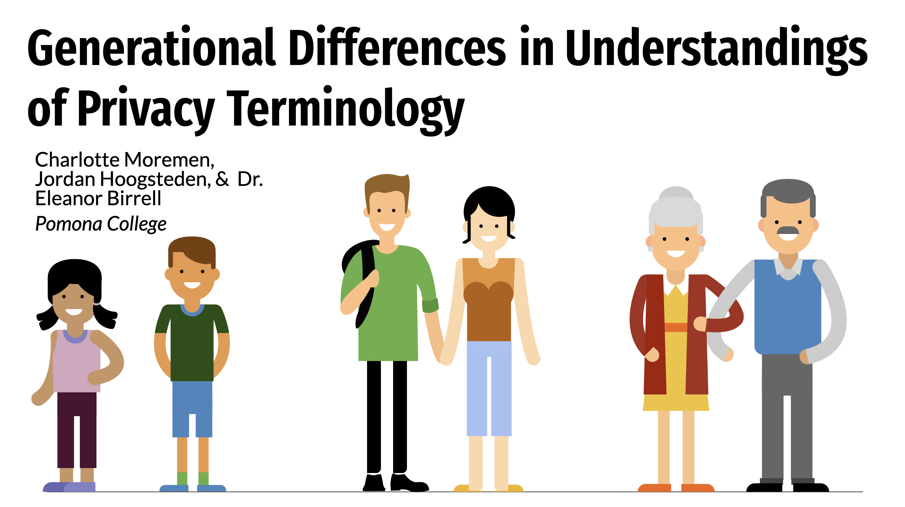
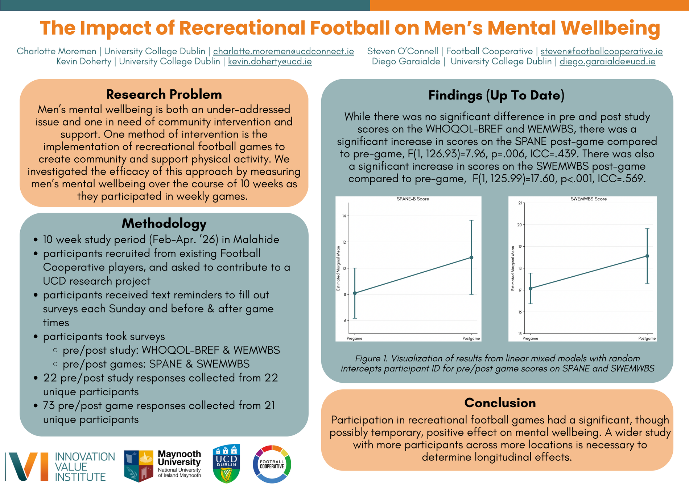
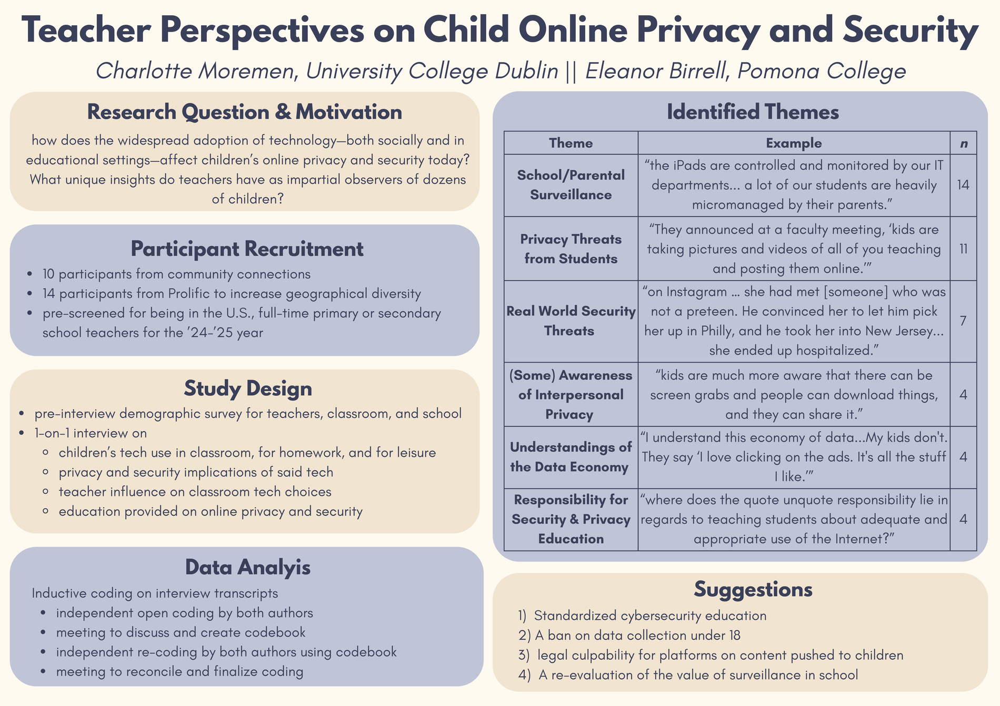
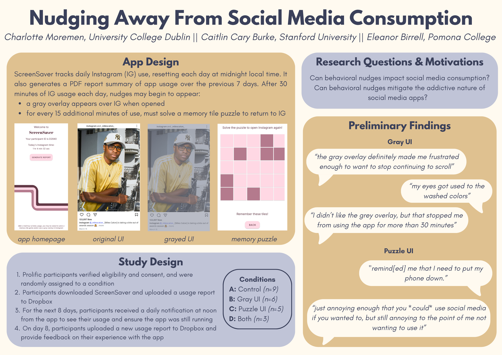

Research
UX and psychology research on usable privacy and security, social media usage, and the mental health benefits of sports. Click on a project for more details!

Paper · PoPETs 2024
Generational Differences in Understandings of Privacy Terminology
A cross-generational study on understandings of terminlogy widely used in privacy policies, emphasizing focus on understudied users such as children and retirees.

In progress · poster at IVI Summit 2026
Recreational Football and Men’s Mental Wellbeing
A 10-week field study measuring how participation in recreational football affects men’s mental wellbeing, week over week and game by game.

Poster · SOUPS 2026
Teacher Perspectives on Children’s Technology Usage and Online Privacy & Security
A qualitative interview study of24 U.S. K–12 teachers on technology use both in and out of the classroom and children's online privacy and security.

In progress
Social Media Usage Management: The Effectiveness of Nudging Strategies
An experimental study investigating the impacts of various nudging methods on decreasing overconsumption of social media.